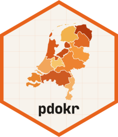
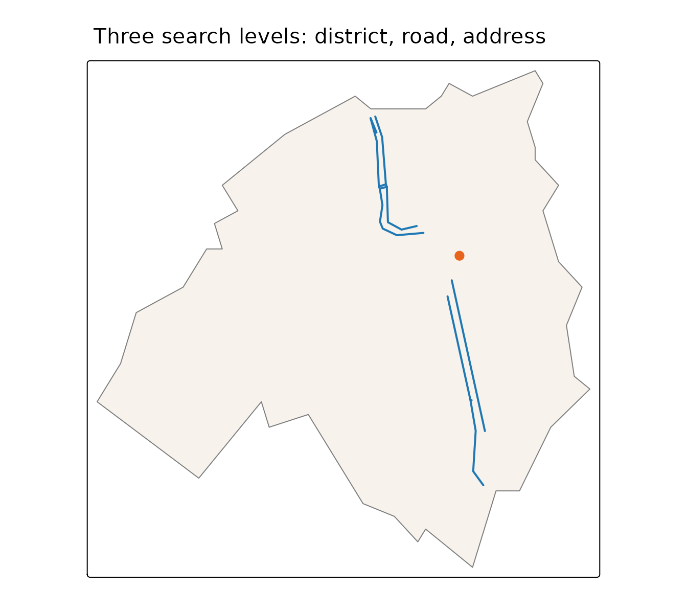

Geocoding: from names to locations
Source:vignettes/articles/geocoding.Rmd
geocoding.Rmdpdok_geocode() turns a name — an address, a postcode, a
street, a town, a municipality, a province — into spatial data, using
the PDOK Locatieserver. The result is
an sf object, so it plugs straight into the rest of
pdokr: most usefully, a geocoded boundary can be handed to
the filter_by argument of pdok_read().
library(pdokr)
library(tmap)
library(dplyr)
#>
#> Attaching package: 'dplyr'
#> The following objects are masked from 'package:stats':
#>
#> filter, lag
#> The following objects are masked from 'package:base':
#>
#> intersect, setdiff, setequal, unionA name to a point
In its simplest form you pass a query and get back the single best match.
home <- pdok_geocode("Domplein 1, Utrecht")
home |> select(weergavenaam, type, score)
#> Simple feature collection with 1 feature and 3 fields
#> Geometry type: MULTILINESTRING
#> Dimension: XY
#> Bounding box: xmin: 5.12111 ymin: 52.09004 xmax: 5.1224 ymax: 52.09118
#> Geodetic CRS: WGS 84
#> # A tibble: 1 × 4
#> weergavenaam type score geometry
#> <chr> <chr> <dbl> <MULTILINESTRING [°]>
#> 1 Domplein, Utrecht weg 15.8 ((5.12193 52.09004, 5.12149 52.09093), (5.12149…It is an ordinary sf object with a point geometry, ready
to map.
tmap_mode("view")
#> ℹ tmap modes "plot" - "view"
#> ℹ toggle with `tmap::ttm()`
tm_basemap(pdok_basemap("grijs")) +
tm_shape(home) +
tm_dots(fill = "#E8631C", size = 1) +
tm_credits("Kaartgegevens © Kadaster")Search levels: the type argument
The Locatieserver does not only know addresses. Every result has a
type, and the geometry you get back depends on it — a point
for pinpoint locations, a line for a road, a polygon for an area.
type |
Geometry | What it is |
|---|---|---|
adres |
point | a specific address |
postcode |
point | the centre of a postcode |
hectometerpaal |
point | a motorway distance marker |
appartementsrecht |
point | an apartment right |
weg |
line | a (named) road |
buurt, wijk
|
polygon | a neighbourhood or district |
woonplaats |
polygon | a town or city |
gemeente |
polygon | a municipality |
provincie |
polygon | a province |
perceel |
polygon | a cadastral parcel |
By default pdok_geocode() returns the best match of
any type, ranked by the service’s relevance score.
That is convenient, but a single name often exists at several levels —
“Utrecht” is a municipality, a province, and a town:
pdok_geocode("Utrecht", limit = 5) |>
select(weergavenaam, type, score)
#> Simple feature collection with 5 features and 3 fields
#> Geometry type: MULTIPOLYGON
#> Dimension: XY
#> Bounding box: xmin: 4.9701 ymin: 52.02628 xmax: 5.19515 ymax: 52.14205
#> Geodetic CRS: WGS 84
#> # A tibble: 5 × 4
#> weergavenaam type score geometry
#> <chr> <chr> <dbl> <MULTIPOLYGON [°]>
#> 1 Gemeente Utrecht gemeente 10.2 (((5.01801 52.06222, 5.01707 5…
#> 2 Utrecht, Utrecht, Utrecht woonplaats 9.25 (((5.01514 52.11395, 5.01553 5…
#> 3 Haarzuilens, Utrecht, Utrecht woonplaats 9.02 (((4.97775 52.13057, 4.97394 5…
#> 4 Vleuten, Utrecht, Utrecht woonplaats 9.02 (((4.98085 52.10015, 4.98933 5…
#> 5 De Meern, Utrecht, Utrecht woonplaats 8.95 (((5.0429 52.08946, 5.04283 52…Pass type to pin down exactly which level you mean. The
same query then returns very different geometry:
point <- pdok_geocode("Domplein 1, Utrecht") # adres -> point
road <- pdok_geocode("Oudegracht, Utrecht", type = "weg") # weg -> line
area <- pdok_geocode("Binnenstad, Utrecht", type = "wijk") # wijk -> polygon
sf::st_geometry_type(point)
#> [1] MULTILINESTRING
#> 18 Levels: GEOMETRY POINT LINESTRING POLYGON MULTIPOINT ... TRIANGLE
sf::st_geometry_type(road)
#> [1] MULTILINESTRING
#> 18 Levels: GEOMETRY POINT LINESTRING POLYGON MULTIPOINT ... TRIANGLE
sf::st_geometry_type(area)
#> [1] MULTIPOLYGON
#> 18 Levels: GEOMETRY POINT LINESTRING POLYGON MULTIPOINT ... TRIANGLESeen together, the three levels nest neatly — the address sits on the road, which lies inside the district.
tm_shape(area) +
tm_polygons(fill = "#F7F3EC", col = "grey50") +
tm_shape(road) +
tm_lines(col = "#1f78b4", lwd = 2) +
tm_shape(point) +
tm_dots(fill = "#E8631C", size = 0.6) +
tm_title("Three search levels: district, road, address")
Combine with pdok_filter_by()
This is where geocoding earns its place in a workflow. Many tasks
start with “the data inside this area” — and
pdok_geocode() gives you that area as a boundary without
having to find and load an administrative layer first. A geocoded
gemeente, wijk or provincie
polygon drops straight into filter_by.
boundary <- pdok_geocode("De Bilt", type = "gemeente")
# read the neighbourhoods that meet the boundary, then keep those whose centre
# lies inside it. A geocoded boundary is generalised, so it clips edge
# neighbourhoods unevenly; `predicate = "within"` alone would drop some, while
# `"intersects"` pulls in slivers of neighbouring municipalities.
buurten <- pdok_read(
"cbs/gebiedsindelingen", "buurt_gegeneraliseerd", datetime = 2025,
filter_by = boundary, predicate = "intersects"
)
centres <- suppressWarnings(sf::st_centroid(buurten))
buurten <- filter(buurten, lengths(sf::st_within(centres, boundary)) > 0)
nrow(buurten)
#> [1] 24The geocoded boundary did the filtering; the result is every neighbourhood inside the municipality of De Bilt. On an interactive map you can see where that is and hover for the neighbourhood names:
tmap_mode("view")
#> ℹ tmap modes "plot" - "view"
tm_basemap(pdok_basemap("grijs")) +
tm_shape(buurten) +
tm_polygons(
fill = "statnaam",
fill.scale = tm_scale_categorical(values = "brewer.set3"),
fill.legend = tm_legend(show = FALSE),
col = "white", fill_alpha = 0.6, id = "statnaam"
) +
tm_credits("Kaartgegevens © Kadaster")The same pattern works for any layer: geocode the area you care about, then read the buildings, parcels or statistics within it.
Where to next
-
Filtering data by area — more
on
pdok_filter_by(). - Mapping buildings by construction year — read a BAG layer inside an area.
- PDOK basemaps — the grey background map used here, and the other styles.